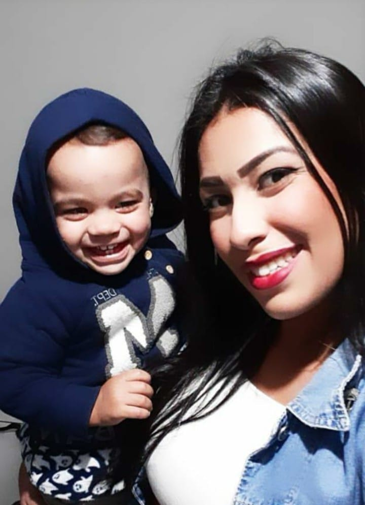

Olá, meu nome é Thamires Honorato, tenho 23 anos, morei 16 anos no Paraná e recentemente estou em São Paulo junto com meu filho a procura de oportunidades.
Minha motivação diária é o meu filho. Quando você tem uma mãe forte, você se torna uma pessoa forte.
Você sabe que será sua única companhia definitiva até o fim de sua vida, e que por isso deve fazer o melhor que puder por si mesmo.
Estou em constantes mudança mas se hoje sou a mulher e mãe forte que sou é graças a minha mãe.Que sempre buscou o melhor para mim, me ensinou tudo.
E eu como mãe se eu for 1% da mulher que ela é sentirei muito orgulho de mim mesma.
A experiencia de ser mãe me ensinou que sou mais forte do que eu pensava, mais dedicada do que imaginava e mais feliz do que jamais sonhei ser.
Geminiana sou muito comunicativa.E tenho como hobbies gosto de ir ao cinema, assisto muitas séries e desenhos.
Não tenho experiência na área de tecnologia ainda, trabalhei 7 anos lidando com público na área de vendas. E 2 anos como recepcionista em uma clínica de estética.
Recentemente, concluí o bootcamp da Generation Brasil onde tive uma vasta oportunidade de aprender linguagem Java, MySQL, e entre outras tecnologias.
Além de trabalhar com mentalidades scrum, me tornando uma desenvolvedora Full stack.
Quero contribuir desenvolvendo meus conhecimentos gerando resultados profissionais.
Particularmente, eu me considero uma pessoa proativa, criativa e curiosa.
posso dizer que gosto demais de aprimorar meus conhecimentos buscando sempre coisas novas.
Abaixo sou eu e meu filho. O motivo de levantar todos os dias e me tornar uma mulher melhor. O Rhavi tem 1 ano de idade e adora animais.

Bom espero que tenham gostado essa é uma breve apresentação minha para mais informação entre em contato comigo.
Um grande abraço!.